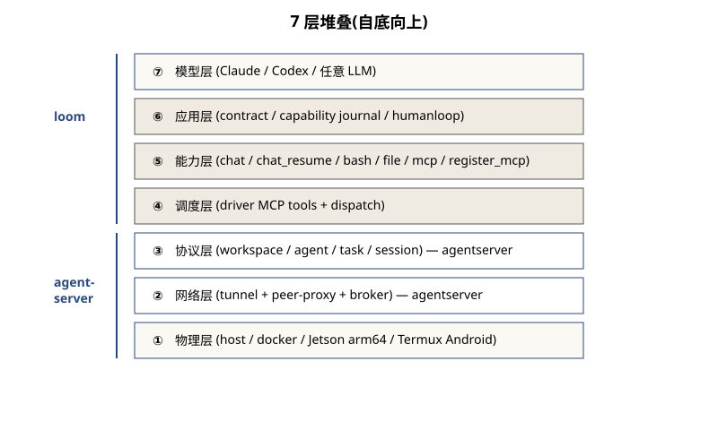

Layer — 水平分层视图
本栈 7 层,从物理算力一路抬到模型层。不是 3 层、不是 10 层——每一层都对应一个 "下一层不够"的具体问题。下面的删层思想实验:每删一层都会失去一个真实能力。

7 层一览(自底向上)
| 层 | 名字 | 关键模块 | 对外契约 |
|---|---|---|---|
| ① | 物理层 | host / docker / Jetson Orin (arm64) / Termux (Android) | OS + cgroup |
| ② | 网络层 | agentserver tunnel(slave 反向 WS)+ peer-proxy(agent↔agent HTTP)+ broker | gw portal HTTP/WS |
| ③ | 协议层 | workspace / agent / task / session 的 REST + WS[4] | agentsdk Go SDK |
| ④ | 调度层 | dispatch + driver MCP tools(submit_task / wait_task / resume_task / driver-fanout) |
routing by Task.Skill |
| ⑤ | 能力层 | chat / chat_resume / bash / file / mcp / register_mcp / unregister_mcp / permissions |
executor.Executor.Run(ctx,t,sink) |
| ⑥ | 应用层 | TaskContract envelope、capability journal、humanloop ask_user/request_permission | TaskContract JSON / result.kind marker |
| ⑦ | 模型层 | Claude / Codex CLI(任意 LLM 通过 llmproxy) |
stream-json |
删层思想实验
每删一层,失去什么能力?这是判断一层"必要"的最直接方法。
多平台支持矩阵
分层抽象的兑现:同一份能力代码在物理层的多种平台上跑。
| 平台 | arch | chat backend | 本栈支持状态 |
|---|---|---|---|
| Linux host (host-native) | amd64 | Claude / Codex | ✅ |
| Linux docker container | amd64 | Claude / Codex | ✅(loom-slave-local-prod 灰度跑过) |
| NVIDIA Jetson Orin (host-native) | arm64 | Claude | ✅(case 5 e2e 跨节点验过) |
| Android (Termux, host-native) | aarch64 | Claude | ✅(bootstrap-slave.sh 支持) |